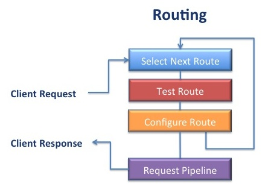

Request Routing
Ejscript includes a powerful request routing engine that processes client HTTP requests. The engine is configured with a set of routes and when a request is received, it tests various routes and selects the best route to handle the request. In the process, routes may redirect or rewrite the request as required.
An Ejscript application will typically have many routes. The configured routes are tested in-order by matching the route pattern against the request URI. A route may require that further preconditions be met before it is suitable to process the request. If the required conditions are not met, the next route in the configuration will be tested. There is always a catch-all route that will process the request if all prior routes fail to qualify.
A route may modify the request during processing by changing the request URI or request data. The route may also run commands as a side-effect during processing.
Route Configuration
Routes are defined using the Router class and the add method. Here is an example of a simple web server with route configuration.
require ejs.web
let server: HttpServer = new HttpServer
var router = new Router
router.add("/User/{action}", {controller: "User"})
router.addRestful()
router.show()
This example defines a route for URIs that begin with "/User/". The route pattern is an extended regular expression pattern that is used to match against the client request URI. If the route pattern matches the URI, the route is selected to process the request.
Route Ordering
Routes are processed in the order in which they are defined. Each route is tested in turn and the first matching route is used to process the request. So ordering route definitions is very important. Routes with longer or more qualified route criteria should be defined first before more general routes.
Route Processing
To process a request, The Ejscript route engine examines each of the configured routes to determine the best matching route for a request. It does this by considering each route in the order they are defined in the configuration file. Each route is tested over a sequence of steps. Not all steps are required. However, the selected route will always perform pattern match, param definition and target execution. If a route fails to match at a step, the route is discarded and the next configured route is considered.
Route Timing
Ejscript will initiate request routing at a different time depending on whether the request has form data. If a request has form data, it is worthwhile to delay routing until after the form data has been read from the client. This enables the routing directives to take action based on the received form data. If a request has no form data, it is routed immediately after the HTTP headers have been read and parsed.
A request with form data has a Content-Type header of application/x-www-form-urlencoded. Requests with a Content-Type set to multipart/form-data which indicates form based file upload, will also delay routing until the uploaded file has been fully received.
Pattern Matching
A route pattern is a specially prepared regular expression that can be quickly matched against the request URI. The route pattern may match the entire request URI, just a subset at the start of the URI or any portion in between. Regular expressions are ideal for route patterns as they can express a wide variety of URI formats and can also extract sub-expressions for later evaluation.
URI Tokens
Often the request URI will not only provide a path to a resource, but it will contain tokens of information that must be isolated and extracted from the URI. Ejscript route patterns provide an easy and efficient means to extract such tokens and define them as request params. To do this, Ejscript route patterns extend the standard regular expression syntax via embedded tokens.
A token is a portion of the URI that is enclosed in braces "{token}". The token name is a symbolic name that will be used later to define a request parameter. In the request URI, any sequence of characters except "/" are acceptable in the token name. For example the route pattern:
router.add("/Dash/({product}))
will match the URI:
/Dash/firefox
A token can be made optional by wrapping in (). After pattern matching, the request param product will be set to "firefox".
To enable the extension token syntax, the standard regular expression syntax for repeat sub-expressions that uses braces: {m,n} needs to be back-quoted. i.e. \{m,n}.
Conditional Sub-Expressions
Conditional sub-expressions can be defined by wrapping in "(" and ")". This means the wrapped sub-expression is valid but not required. For example:
router.add("/Dash/({product}(/{configuration})))
will match any of the URIs:
/Dash/firefox /Dash/firefox/debug /Dash/firefox/release
Anchoring Route Patterns
It is wise to anchor route patterns to the start of the URI. This is done by using the "^" character at the start of the URI. If the pattern describes the full request URI, the pattern can anchor to the end of the URI by appending "$". For example:
^/{controller}/{action}$
Method Matching
Method matching is an optional step. Routes can be configured to only match certain HTTP methods. Method matching tests the supported route methods against the actual request HTTP method.
router.add("/Dash/product/buy", {method: "POST"})
By default a route supports all methods.
Header Matching
Header matching is an optional step. Routes can be configured to require that the request has HTTP headers with or without defined values. For example: a route may wish to only be relevant for a particular browser:
r.add(function (request) request.header("user-agent").contains("Chrome"))
})
This defines a route with a custom matching function. The function is invoked to test the request. If it returns true, the route is selected.
Form Value Matching
Form value matching is an optional step. Routes can be configured to require that the request has form data with or without defined values. Form data is sourced from the request URI query string and from form body (POST) data. Form data must have a Content-Type of "application/x-www-form-urlencoded" — normal HTML forms are encoded this way.
r.add(function (request) request.params("name").match(/(Mary)|(John)))
This route will match the URIs:
/info/file.html?name=Mary /info/file.html?name=John
Param Definition
After a route fully qualifies, request params are created for route pattern tokens. This provides an easy mechanism for extracting useful information from the request URI and passing it to the web page or controller for processing.